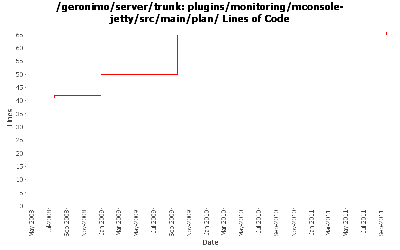

[root]/plugins/monitoring/mconsole-jetty/src/main/plan

| Author | Changes | Lines of Code | Lines per Change |
|---|---|---|---|
| Totals | 7 (100.0%) | 26 (100.0%) | 3.7 |
| genspring | 2 (28.6%) | 16 (61.5%) | 8.0 |
| dwoods | 2 (28.6%) | 9 (34.6%) | 4.5 |
| hanhongfang | 1 (14.3%) | 1 (3.8%) | 1.0 |
| djencks | 2 (28.6%) | 0 (0.0%) | 0.0 |
GERONIMO-6154 Add monitoring to basic console view
1 lines of code changed in 1 file:
GERONIMO-4994 To support multiple level navigation tree in geronimo web console.
1 lines of code changed in 1 file:
GERONIMO-4823 role-based administration capabilities
15 lines of code changed in 1 file:
GERONIMO-4474 - patches did not include required updates to the Jetty plan.xml files.
8 lines of code changed in 1 file:
GERONIMO-4145 Additional Admin Console navigational icons. Merged in from 2.1.2.
1 lines of code changed in 1 file:
GERONIMO-4014 clean up monitoring plugin a little bit.
0 lines of code changed in 2 files: